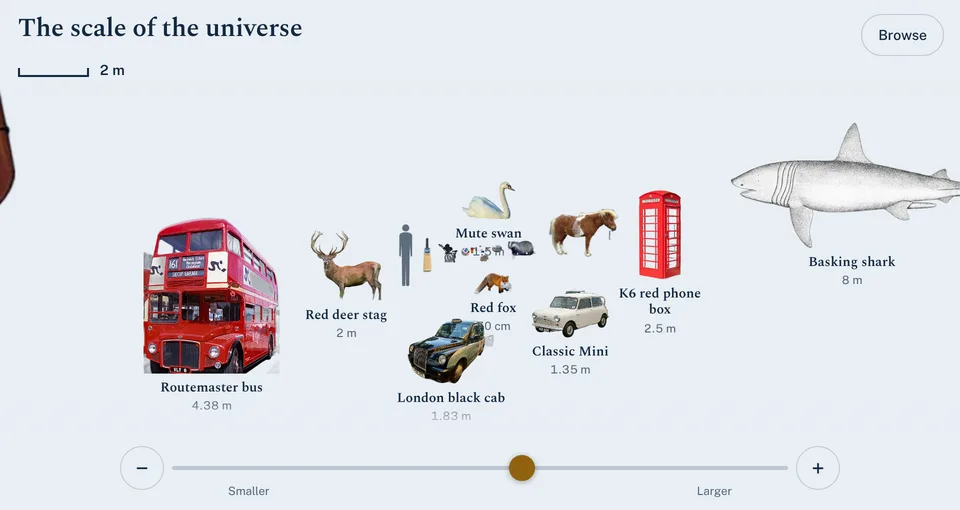
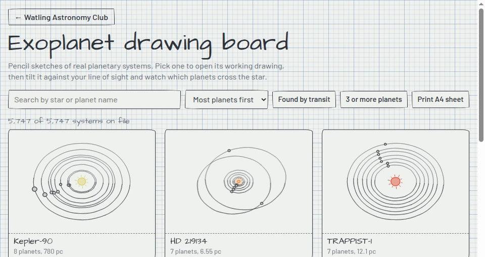
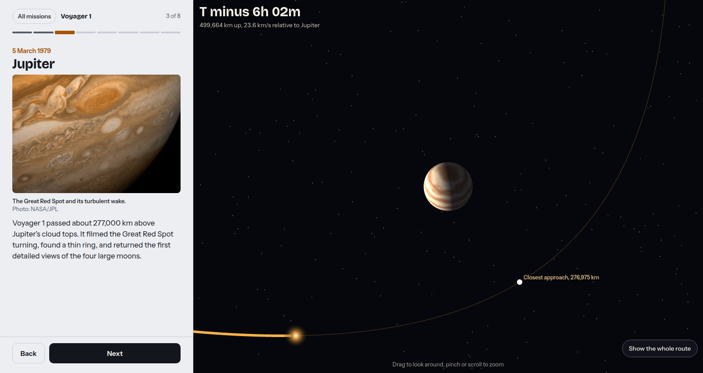
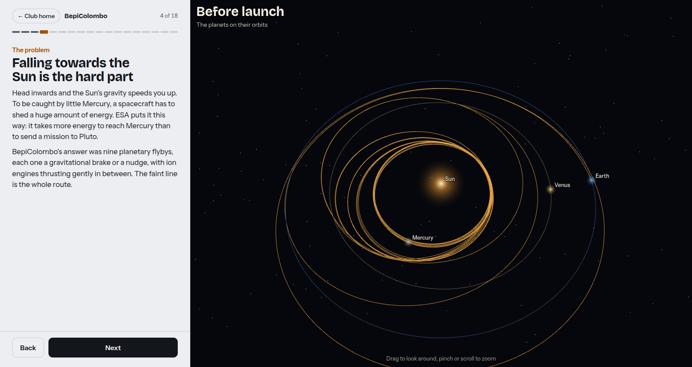

Our place in space
One small world.
A whole lot to explore.
Explore a Sun-centred orrery. Follow Earth around the Sun, see its fixed 23.4° tilt mark the seasons, and watch the Moon orbit Earth through its phases.
Explore the club’s tools
Pick a tool and start exploring.

Club tool · Size and scaleThe Scale of the Universe
Zoom from atoms to galaxies with everything drawn to scale. Compare ladybirds, Big Ben, Ben Nevis, planets and stars.
Start zooming →
Club tool · ExoplanetsExoplanet Drawing Board
Browse real planetary systems as orbital sketches. Search systems, compare planets, and explore which worlds cross their star.
Explore the board → Club tool · Satellites
Club tool · SatellitesISS Pass Predictor
See when the International Space Station may pass over Milton Keynes or a place you choose. Explore its sky track and visibility.
Find a pass →
Club tool · Mission journeysMission Explorer
Choose from seven space missions and replay each story step by step, with 3D flight paths and mission photographs.
Explore the missions →
Club tool · Mission journeysThe long road to Mercury
Follow BepiColombo’s origins, planetary flybys and planned arrival in an interactive 3D replay of its eight-year journey.
Follow the mission →Earth’s year around the Sun
Explore the sky model
Your browser does not support WebGL. Use the date control below to read how the seasons and Moon phase change through the year.
An explanatory model, not a precision ephemeris. The Sun remains at the centre; Earth’s circular orbit, fixed 23.4° axial tilt, and the Moon’s orbit and phase all change with the selected date. Distances and sizes are deliberately altered for legibility, and the Moon follows an average 29.53-day cycle.
Earth texture: NASA Blue Marble: Next Generation. Moon texture: NASA/GSFC/ASU, Lunar Reconnaissance Orbiter Wide Angle Camera.
About the club. Watling Astronomy Club is a Friday astronomy club at Watling Academy in Milton Keynes, running through the darker months from October to February.
These browser-based activities are small invitations to explore. New projects will join the collection as we make them.